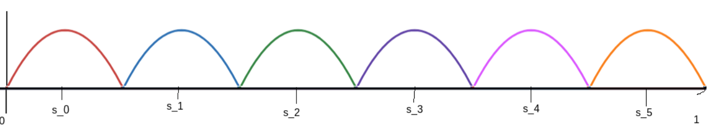

Error correction mechanism in neural networks given binary signal
Overview
There is an interesting mechanism GPT-2 appears to use to measure distances between duplicate tokens. The mechanism reminds me a lot of Twisted pair cabling in communications.
The mechanism is fiddly to explain in context, so I've tried to abstract out most of the details, and give a clean toy version of the mechanism. I think some of the structures for this mechanism could be used in other contexts than computing distances.
Setup
We have the set of points \(\lbrace x_i\rbrace_{i=0}^{n} \in \mathbb{R}^{d} \subset \mathbb{R}^{d_{\text{model}}}\), with \(x_i = f(i/n)\) where \(f: [0,1] \to \mathbb{R}^{d}\) is a smooth function. We take as input \(x_i\), \(x_j\) with \(|i-j| \le k << n\) . We want to construct a transformer which can estimate \(|i-j|\) given \(x_i, x_j\). For this transformer, we additionally assume that \(d\) is relatively small compared to the embedding dimension \(d_{\text{model}}\).
The mechanism
We set up \(M+1 < n\) "sentry points" \(\lbrace s_i\rbrace_{i=0}^{M}\) uniformly along \([0,1]\). And we define \(g: [0,1] \to [0,M]\cap \mathbb{Z}\) sending \(t \in [0,1]\) to the index of the closest sentry point.
Then we have, \(||x_i-x_j - (\frac{i}{n}-\frac{j}{n})f'(s_{g(\frac{i}{n})})||_2 = ||\int_{\frac{j}{n}}^{\frac{i}{n}} f'(t)-f'(s)dt||_2 \le L (\frac{1}{2M} + \frac{|i-j|}{n})\cdot\frac{|i-j|}{n}\)
where \(L\) is such that \(||f'(x)-f'(y)||_{2} \le L|x-y|\) for all \(x,y \in [0,1]\).
So \(| \frac{(x_i-x_j)\cdot f'(s_{g(\frac{i}{n})})}{||f'(s_{g(\frac{i}{n})})||_2^2} - (i-j) | \le \frac{||\int_{\frac{j}{n}}^{\frac{i}{n}} f'(t)-f'(s)dt||_2}{||f'(s_{g(\frac{i}{n})})||_2} \le \frac{L}{||f'(s_{g(\frac{i}{n})})||_2} (\frac{1}{2M+2} + \frac{|i-j|}{n})\cdot\frac{|i-j|}{n}\).
Therefore if we can approximate \(\frac{(x_j-x_i)\cdot f'(s_{g(\frac{i}{n})})}{||f'(s_{g(\frac{i}{n})})||^2_2}\), then we can approximate \(j-i\).
Attention mechanism
If we are given a two token input to the transformer \(x_j\), \(x_i\), then assuming that \(d \le d_{\text{head}}\), two attention heads is sufficient to compute \(x_j - x_i\) (have one head which outputs -\(x_i\), and the other \(x_j\)). We write \(x_j - x_i\) to an orthogonal subspace from \(x_i\) so that the MLP can cleanly access \(x_i\) later.
MLP mechanism
The MLP mechanism consists of \(2M+2\) neurons, with a pair of two neurons associated with each sentry point.
For each sentry point \(s_{m}∈\lbrace 0,\frac{1}{M+1},\frac{2}{M+1},…,1 \rbrace\), we define a neuron pair:
\(\text{Neuron}^{+}_{m}=\text{ReLU}(b_{m,1}f(s_{m})⋅x_{i}+b_{m,2}+b_{m,3}(x_{j}−x_{i})\cdot f'(s_{m}))\)
\(\text{Neuron}^{-}_{m}=\text{ReLU}(b_{m,1}f(s_{m})⋅x_{i}+b_{m,2}-b_{m,3}(x_{j}−x_{i})\cdot f'(s_{m}))\)
where \(W_{m}\), \(b_{m,l}\) are tuned so that \(b_{m,1}f(s_m) \cdot x_{i}+b_{m,2} > \epsilon\) when \(m=g(\frac{i}{n})\), and \(b_{m,1}f(s_m) \cdot x_{i}+b_{m,2} < 0\) otherwise. Additionally we set up \(b_{m,3}(x_{j}−x_{i})\cdot f'(s_{m})\) so that it has a magnitude of less than \(\epsilon\) when \(|i-j| \le k\).

Example sentry neuron activations when \(x_i=x_j\) with M = 5. Each different colour corresponds to the activation of a different sentry neuron. We can pick M+1 coprime to n so that the sentries don't vanish at \(\frac{i}{n}\) for any \(i\), and so they are bounded above by some \(\epsilon>0\). A signal of magnitude \(\epsilon\) can be encoded in the difference between the activations of pairs of these sentry neurons.
Setting up these sentries relies on f not coming close to intersecting itself, so that the dot product with \(f(s_m)\) is only high on a connected interval.
We wrote \(x_j-x_i\) in an orthogonal subspace to \(x_i\) so the sentry neurons can all be written in the standard form \(\text{ReLU}(w^th_0 + b)\) where \(h_0\) is the residual stream post attention.
We then output \(\frac{C_{m}}{b_{m,3}}\)(\(\text{Neuron}^{+}_{m}\)-\(\text{Neuron}^{-}_{m}\))\(v\) from the \(m\)th neuron pair.
Under this construction \(\text{Neuron}^{+}_{m}\) and \(\text{Neuron}^{-}_{m}\) always activate at the same time as each other, so the output of the \(m\)th neuron pair is \(0\) if \(m \neq g(\frac{i}{n})\), and \(C_{m}(x_j-x_i) \cdot f'(s_{m})v\) if \(m=g(\frac{i}{n})\).
Since only a single neuron pair activates at once, the complete output of this MLP layer is \(C_{g(\frac{i}{n})}(x_j-x_i) \cdot f'(s_{g(\frac{i}{n})})v\).
Then setting \(C_{g(\frac{i}{n})}\) proportional to \(\frac{1}{||f'(s_{g(\frac{i}{n})})||^2_2}\), we get an output proportional to \((j-i)v\)
Extensions of mechanism
The above mechanism is clean, and captures the key ideas. A nice thing about the mechanism is that the \(f(s_m) \cdot x_i\) term can be noisy, but it doesn't matter because the common noise will get cancelled out, similar to twisted pair encoding.
However, there can still be potential issues caused by noise at the transitions between sentries. It is also not robust to \(f\) intersecting itself, and the number of sentries required grows with \(n\).
There are cases where this kind of two neuron interference cancellation could come in useful outside of computing distance. For example, if you want to distinguish between British and Canadian English, you could have:
\(\text{Neuron}_{\text{canada}} = \text{ReLU}(\text{Commonwealth} + \epsilon(\text{Canadian}) )\)
\(\text{Neuron}_{\text{british}} = \text{ReLU}(\text{Commonwealth} + \epsilon(\text{British}) )\)
And then take the difference between the two. The interference that would usually make it difficult to distinguish between the two very similar dialects gets cancelled out.